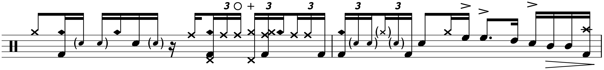

Transcription: “Mercy, Mercy, Mercy” — Dave Weckl with The Buddy Rich Big Band

This week, Dave Weckl will bring us the penultimate entry for these Memorial Concert posts. I must say, these posts have sure kept me busy. I feared I bit off a little more than I could chew when I got to Vinnie’s post, but now the end is in sight. Thank goodness I had some anniversaries halfway through to keep me from getting burned out.
With Dave, I’m in sort of the same spot with as I was with Vinnie; none of Dave's songs have drums solos written in. So, Dave starts his second chart, “Bugle Call Rag”, with a free‐form drum solo, just like what Vinnie did on “Ya Gotta Try”. And just like Vinnie, I decided not to look at the solo. Yeah, the first thing I’m doing after I wrap this concert up is share a rant about drum solos…
Also, Dave’s playing on “Mercy, Mercy, Mercy” is just something else. During the four bar drum intro you can really tell he’s trying to bring the house down:
Sorry for the quality. There’s no “official” upload for this tune. The VHS rips actually sound the best — the DVD rips have the aforementioned clicks and pops that just ruin the whole thing.
Dave isn’t often categorized as a groove drummer, but oh man does he play this chart with a lot of feel. Like I said, the intro shows he’s pulling no punches. Just check out this 16th note triplet joint he slips in:
I have only one word:

I start the sheet music with the first ~32 bars of the chart, which provide a good look at the moves Dave uses throughout the tune, including some funky ride/bell action, and hi hat barks played with the left hand. Each chorus uses a two measure drum solo as a segue, such as this one that starts on the third bar:
Dave had a double pedal that night, but I think he saves it for the fast doubles that we hear throughout, such as this little ditty at 1:55 that closes the first “War Chant” section:
Side note: why the hell is that passage in the chart? The original Cannonball Adderley version doesn’t have it; arranger Phil Wilson specifically added it for Buddy’s version. I’ve tried to track down the origins of this motif, but its provenience remains unclear. You recognize it — the Florida Sate “Tomahawk Chop” uses the same general melody. Apparently, that tradition started in the 1980’s when a drunken frat bro tried to sing the riff from the Marching Chief’s “Massacre” and the rest of the crowd joined in. How tasteful.
But where’d the marching band get it from? There’s a suspicion online that the musicians for Buffalo Bill’s Wild West Show cooked it up as a generic Native American combat theme (circa late 1800's). I couldn't find any recordings or sheet music to confirm this. The earliest piece I could find that unmistakably features the chant is a ragtime joint from 1905 called “Silver Heels: An Indian Intermezzo”. I guess the theme became a pastiche (more kitsch that pastiche if you ask me), showing up in everything from John Ford films to Captain Kangaroo.
Quite a detour I just went on, especially since, after all that research, I still don’t know what Mr. Wilson was smoking when he decided to shove that riff into a bluesy jazz tune.
Moving on, the next section I took a look at comes right before the tenor feature. It kicks off with another two bar solo before Dave fills with the band, featuring some beefy singles:
They don’t look like much on paper, but these triplets sound absolutely monstrous.
The final section is the last chorus, which opens with another two bar solo. I finish out the song, including the big swing ending. Dave’s playing is, well…
I backed off on the hi hat for this one. I think it’s for the best. There are a couple linear licks that feature the left foot pedal, and these are included. But other than that, I'm starting to think it’s fruitless.
Well that’s all for now. Only one more of these posts to go, so stay tuned!
Posted on November 29, 2020
Tags: 2020 • Transcriptions • Dave Weckl • The Buddy Rich Big Band • The 1989 Buddy Rich Memorial Concert